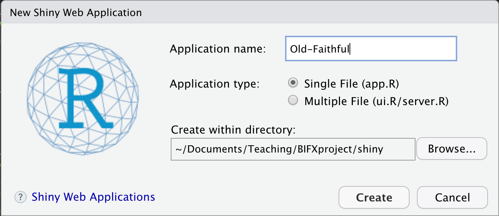

GitHub / DockerHub Lab
Agenda
- Welcome and Introductions
- What do you hope to get from this class?
- What was the last book that you read?
- Course Overview
- Blackboard tour
- GitHub tour
- Syllabus
- Code of Conduct
- Today’s lab
- Course project tour
- dockerhub tour
Course Project
Sign up for GitHub.
Fork your own copy of the course project.
Add me as a collaborator. This will make giving feedback and asking/answering questions much easier.
Clone your fork to your local computer. You may find GitKraken useful. You can get a free pro subscription as part of the Student Developer Pack.
Add a
devbranch to your repository.
dockerhub
If you don’t have Docker already installed, start with installing Docker on your system.
Start up your first Docker image. In the terminal type:
docker run -ti r-baseCreate a Shiny app using the boiler plate code provided by RStudio
- In RStudio use File > New File > Shiny Web App…
- Create your app in the
shinydirectory of your course project.

Build a local image of your course project.
- In the terminal go to your repository’s root directory and type:
docker build -t bifxproject . - Try out your new image with:
docker run --user shiny --rm -p 3838:3838 -t bifxproject - Now open http://localhost:3838 in your favorate browser
- In the terminal go to your repository’s root directory and type:
Add a new shiny app to BIFXproject with code from the Iris k-means clustering demo app.
Rebuild and test your docker image.
- hint: Docker is good at remembering what it has already done. Use the
--no-cacheoption to force it to start the build from scratch.
- hint: Docker is good at remembering what it has already done. Use the